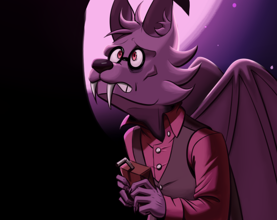

Água com Sal
Para fugir de água salgada, uma menina se isola no oceano

Para fugir de água salgada, uma menina se isola no oceano



A perda de memôria e o mal entendido dão as mãos nessa história onde um corvo de fumaça e um morcego são unidos pela benevolencia do destino e uma mancha de... suco de tomate?

Quando um cangaceiro perde a cabeça a coisa fica seria.